Graphzine français moderne auto-édité en séries ultra limitées.
Ces recueils d'illustrations et de dessins en noir & blanc, d'une sélection d'auteurs de provenances diverses raviront les amateurs de science-fiction, sex-fiction, intelligences ovnis, contacts aliens,
mutants reptiliens, Albert Hofmann, Bob Lazar, Stephen Hawking, génocides robots zombies, sciences bizarres, fantômes de l'espace intergalactique, Charles Manson, Aleister Crowley, Steven Marcato, extrémisme religieux,
darwinisme social, niveaux de gris incongrus, vagues obscures, Amanda Lear la louve des SS, les frères Bogdanov, le mal sous toutes formes, la tripoutre, Roger Penrose et Burzum.
|
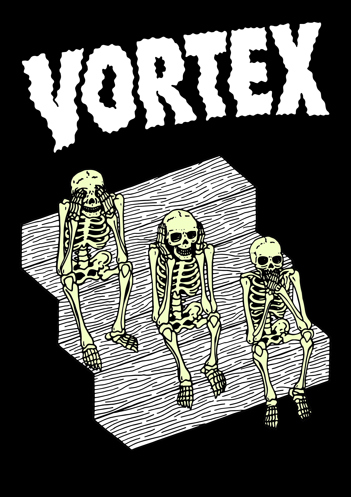
"LES IMΛGES FΛNTÔMES" |
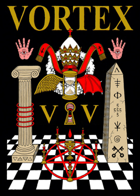
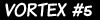
"ΛRCHIVVM SECRETVM VΛTICΛNVM"
60 pages - Format 20x29 cm - 111 exemplaires |
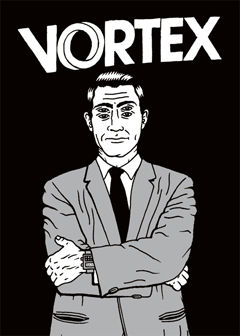
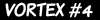
"LA QUATRIEME DIMENSION"
60 pages - Format 20x29 cm - 111 exemplaires |
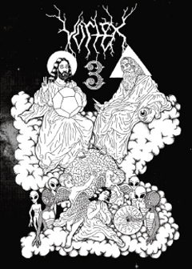
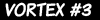
"RENCONTRES DU TROISIEME STEREOTYPE"
52 pages - Format 20x29 cm - 111 exemplaires |
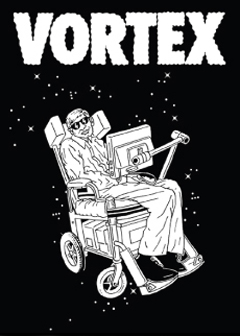
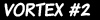
"WEIRD SCIENCE" |
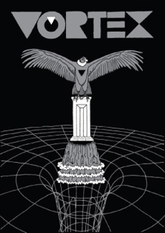
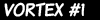36 pages - Format 20x29 cm - 100 exemplaires Couverture sérigaphiée, intérieur en impression laser noir et blanc. Auteurs : Stéréotype, Marie Anglade, The G-Rhymes, Der Kommissar, JM Bertoyas, Madame Lapin, Nora Boudjemaï, Spé, Marie Colin-Madan, Weirdo, Omick, Roundopready. © 2009 |
© COPYLEFT 2011 STEREOTYPE. ALL RIGHTS RESERVED. Code Fanelie PIERI